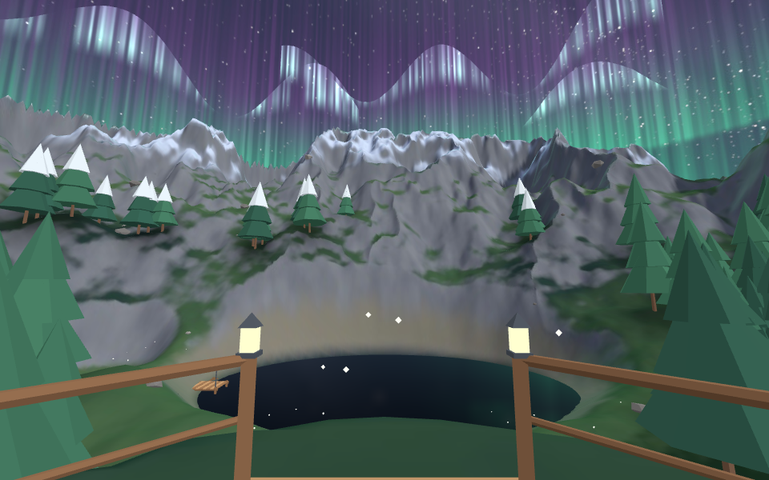
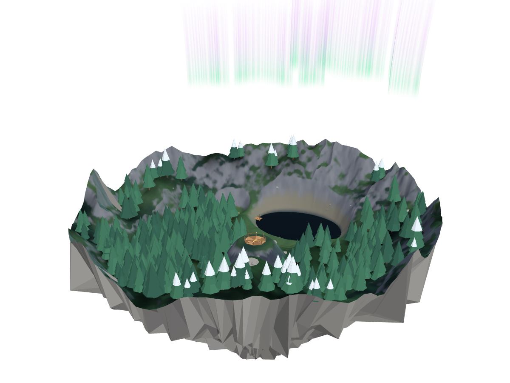
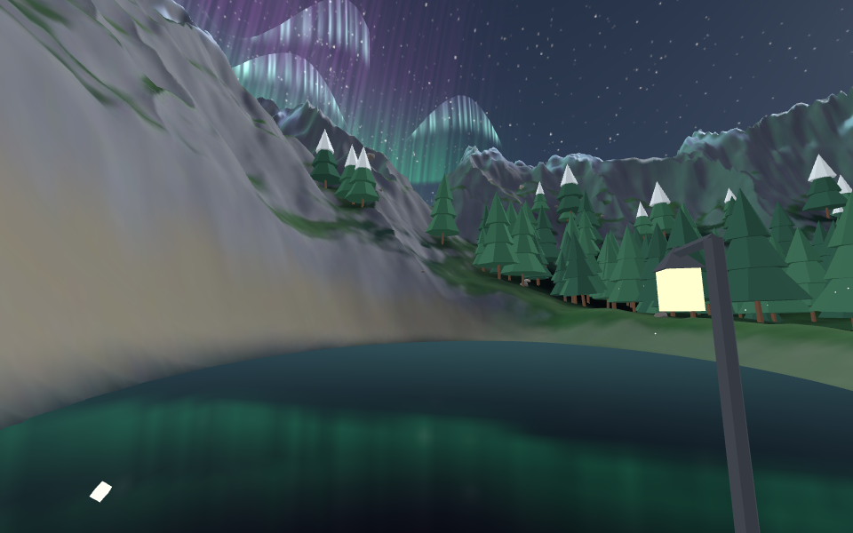
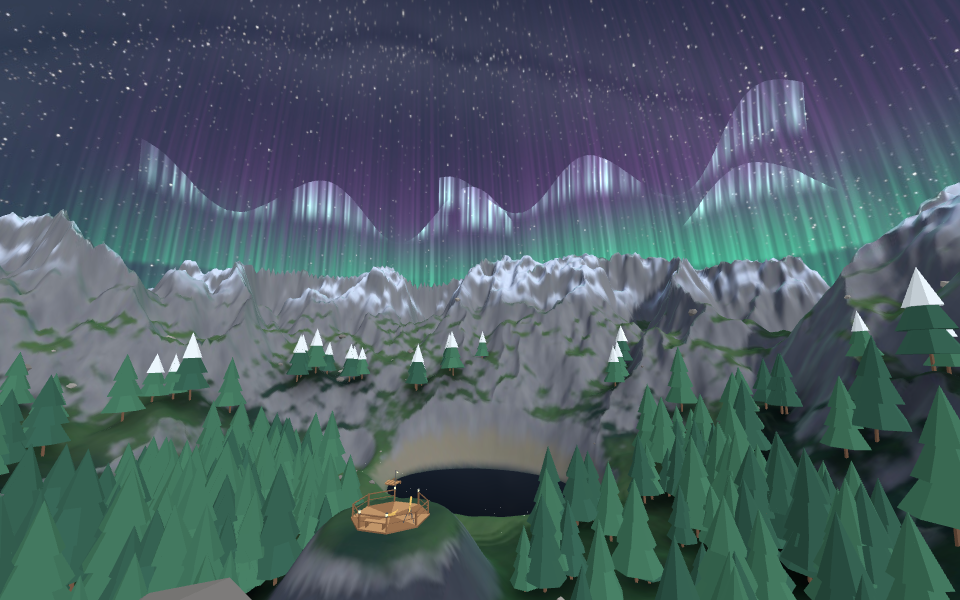
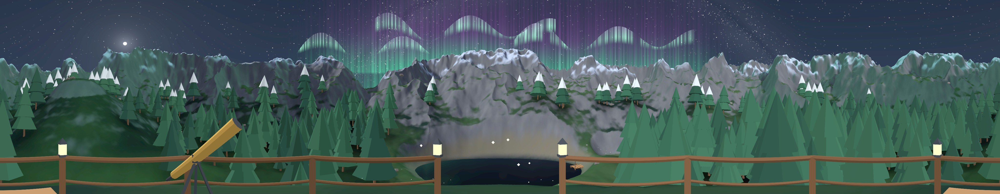

Overlook deck
Stand on the brass compass rose. The lake opens to the north and the aurora ripples above the peaks.
A spatial web experience · visionOS 27
A moonlit alpine lake, a cedar deck with a brass telescope, fireflies over the shallows — and ribbons of aurora drifting above the peaks. It’s all a web page. On Apple Vision Pro, one tap turns it into a place.

Viewpoints
Pick a spot and the valley rearranges itself around you. Real-world scale, so the deck under your feet is right where your floor is.

Stand on the brass compass rose. The lake opens to the north and the aurora ripples above the peaks.

Walk to the end of the old jetty. Water on three sides, fireflies drifting over the shallows.

Climb the southern ridge for the whole valley: deck, lake and the northern lights in one sweep.
Panorama
This is a plain <img> with the new controls attribute.
In Safari on Vision Pro, tap it to wrap the panorama around you with native controls.

Not on Vision Pro yet? Drag to look around the deck.
How it’s built
Safari in visionOS 27 turns on immersive website environments by default. The whole experience rests on three pieces of standard web platform.
A <model> element points at a USDZ built in real-world meters, with the origin at the visitor’s feet. display: none means nothing downloads until someone asks.
<model id="world"
src="assets/overlook.usdz"
environmentmap="assets/overlook-light.exr"
style="display: none"></model>Modeled on the Fullscreen API. Call it straight from a tap, then react to immersivechange. The Digital Crown always brings people back.
enter.onclick = () => world.requestImmersive();
world.addEventListener("immersivechange", () => {
const inside = document.immersiveElement === world;
document.body.classList.toggle("is-immersive", inside);
});A DOMMatrix on entityTransform moves the world so a viewpoint lands at your feet, turned away from the Safari window.
const t = new DOMMatrix();
t.rotateSelf(0, heading - 30, 0);
t.translateSelf(-x, -y, -z);
world.entityTransform = t;
The valley itself is procedurally generated — terrain, forest, sky, aurora and all — by
tools/build_assets.py, with moonlight baked into the textures so it renders cheaply.
Or press the Digital Crown at any time.